Project Objective
The objective was to design and implement a
functional enterprise office network that provides
secure communication between departments while
allowing controlled access to external networks.
Technologies Used
Cisco 3560
Cisco 2960
Cisco 1941
VLANs
DHCP
NAT/PAT
ACL
Wireless
Network Design
The network was divided into separate VLANs to
improve organization and reduce unnecessary broadcast
traffic.
VLAN
Department
Network
10
Administration
192.168.10.0/24
20
Finance
192.168.20.0/24
30
IT
192.168.30.0/24
40
Wireless
192.168.40.0/24
Implementation
Inter-VLAN routing was implemented on the Cisco 3560
multilayer switch using switched virtual interfaces.
DHCP pools were configured for each VLAN, allowing
clients to automatically receive network addresses.
The Cisco 1941 router was configured to perform
NAT/PAT for internal networks. A separate edge router
provided the external network connection.
Network Security
An extended ACL was implemented on the multilayer
switch to control communication between departments.
Wireless users in VLAN 40 were restricted from
accessing the Finance VLAN while other permitted
communication remained available.
access-list 100 deny ip
192.168.40.0 0.0.0.255
192.168.20.0 0.0.0.255
access-list 100 permit ip any any
interface vlan 40
ip access-group 100 in
Network Services
-
DHCP addressing for all VLANs
-
Inter-VLAN communication
-
NAT/PAT for external connectivity
-
Wireless connectivity
-
Network printer access
-
Access control using ACLs
Testing & Results
Connectivity and network services were tested using
Cisco IOS verification commands and end-device
connectivity tests.
PASS
DHCP Assignment
PASS
VLAN Communication
PASS
Printer Connectivity
PASS
Wireless Connectivity
PASS
NAT Configuration
Challenges & Troubleshooting
During implementation, several configuration issues
were encountered, including subnet mask mismatches,
routing problems, wireless adapter configuration,
and ACL connectivity restrictions.
These issues were resolved using commands such as
show ip route,
show ip interface brief,
show interfaces trunk,
show access-lists, and
ping.
Project Outcome
The enterprise network was successfully implemented
and tested. The project demonstrates practical
experience with Cisco networking, VLAN segmentation,
routing, DHCP, NAT/PAT, ACL security, wireless
networking, and network troubleshooting.
Project Objective
The objective was to design a structured cabling
system for a small accounting office that provides
organized, reliable, and scalable network connectivity
for users and shared network resources.
Tools & Technologies
Cat6 Cabling
Patch Panels
Network Rack
Cable Management
Draw.io
Ethernet
Office Requirements
The proposed network was designed for a 20-user
accounting office. Each workstation was provided with
a dedicated network outlet, with additional capacity
considered for shared resources and future expansion.
-
20 user workstations
-
Centralized network rack
-
Cat6 horizontal cabling
-
Patch panel termination
-
Organized cable routing
-
Provision for future expansion
Office Floor Plan
A floor plan was developed to identify workstation
locations, network outlets, cable routes, and the
central network rack. Cable paths were planned to
provide organized routing while minimizing unnecessary
cable runs.
 Office Floor Plan
Office Floor Plan
Cable Routing Design
Cable routes were planned from the central network
rack to individual workstation outlets. Cable tray
routes and drops were represented on the design to
provide a clear physical installation path.
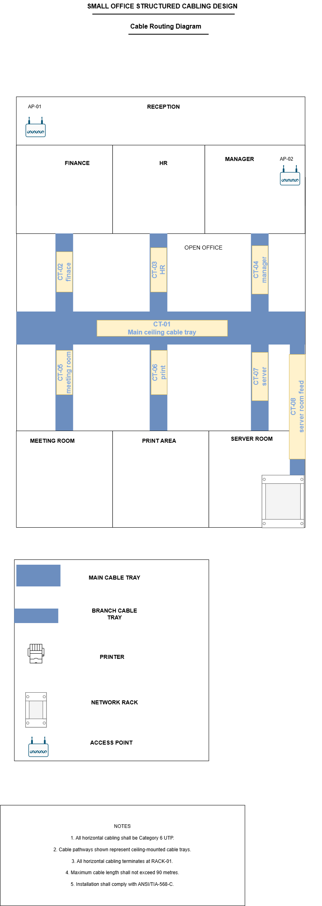
Cable Routing Diagram
Network Rack Layout
A rack layout was created to organize the network
equipment and support proper cable management.
Components were positioned logically to simplify
installation, maintenance, and troubleshooting.
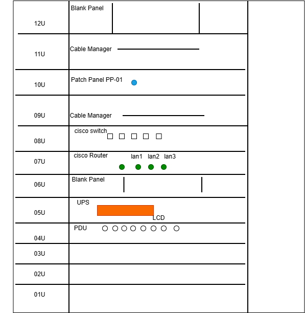
Network Rack Layout
Patch Panel Layout
The patch panel was organized according to the
workstation cable labels. Each horizontal cable run
terminates at the patch panel, allowing the network
connections to be managed centrally.
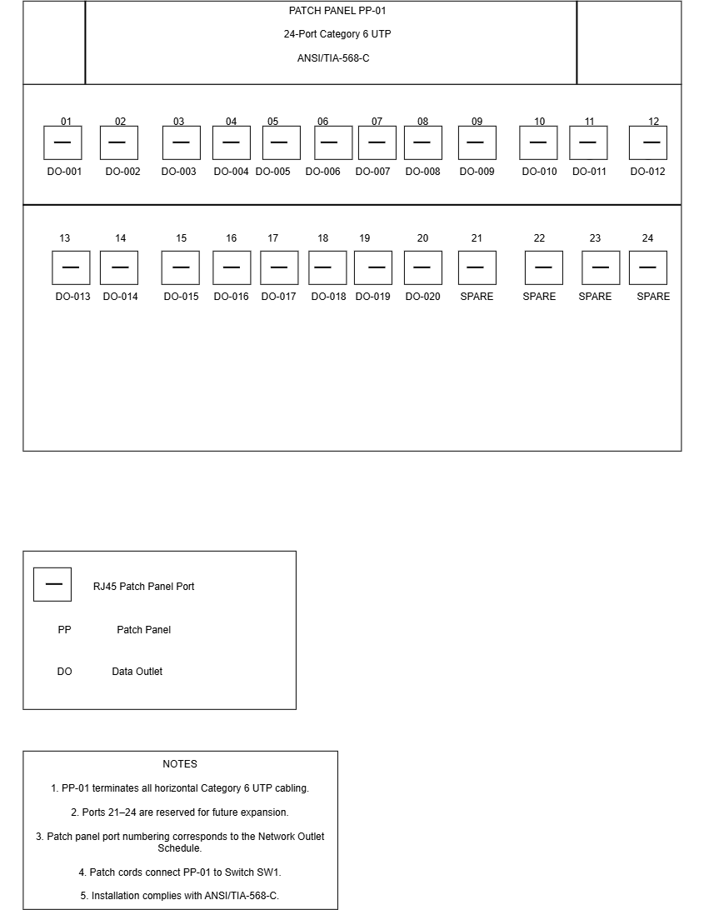
Patch Panel Layout
Cable Labeling Scheme
A standardized cable labeling scheme was created to
make cable identification easier during installation,
troubleshooting, and future maintenance.
Example:
PP01-01 → Administration PC 01
PP01-02 → Administration PC 02
PP01-03 → Finance PC 01
PP01-04 → Finance PC 02
The labels were designed to provide a clear relationship
between the patch panel port and the corresponding
workstation outlet.
Bill of Materials
A Bill of Materials was prepared to identify the
materials required for the structured cabling
installation.
Component
Purpose
Quantity
Cat6 Cable
Horizontal Cabling
As Required
Patch Panel
Cable Termination
1
Network Rack
Equipment Mounting
1
RJ45 Outlets
Workstation Connections
20+
Patch Cords
Rack Connections
As Required
Cable Management
Organization
As Required
Documentation
The project was documented using structured diagrams
and technical documentation. The final documentation
provides an installation reference and makes it easier
for technicians to understand the physical network
infrastructure.
-
Floor plan
-
Cable routing diagram
-
Rack layout
-
Patch panel layout
-
Cable labeling schedule
-
Bill of Materials
Skills Demonstrated
Structured Cabling
Cat6 Installation Planning
Rack Design
Patch Panels
Cable Management
Cable Labeling
Network Documentation
Technical Drawing
Project Outcome
A complete structured cabling design was produced for
the office environment. The project demonstrates the
ability to plan physical network infrastructure,
organize network equipment, document cable routes,
and produce clear technical documentation for
installation and maintenance.
Project Objective
AfyaSmart was developed as a centralized web
application for managing different aspects of
personal health and wellness in one platform.
The system combines health records, wellness
tracking, reminders, and emergency support
functionality.
Technologies Used
PHP
MySQL
HTML
Bootstrap 5
CSS
JavaScript
Chart.js
Leaflet
Authentication & User Access
The application includes user registration and
authentication functionality. Users register with
unique email addresses and access protected areas
through session-based authentication.
-
User registration
-
Secure password hashing
-
Session-based authentication
-
Authenticated dashboard
Dashboard
The authenticated dashboard provides an overview of
recent user activity. It displays information such as
medication counts, health records, upcoming reminders,
mood check-ins, and a daily health score.
Health & Wellness Modules
AfyaSmart combines several health and wellness
modules into one application.
Medication Reminders
Mental Wellness
Symptoms Checker
Health Records
Health Timeline
Diet & Wellness
Daily Health Score
Medication Management
The medication module provides CRUD functionality for
managing medication information. Users can create,
view, update, and delete medication entries while the
system provides reminder notifications when medication
becomes due.
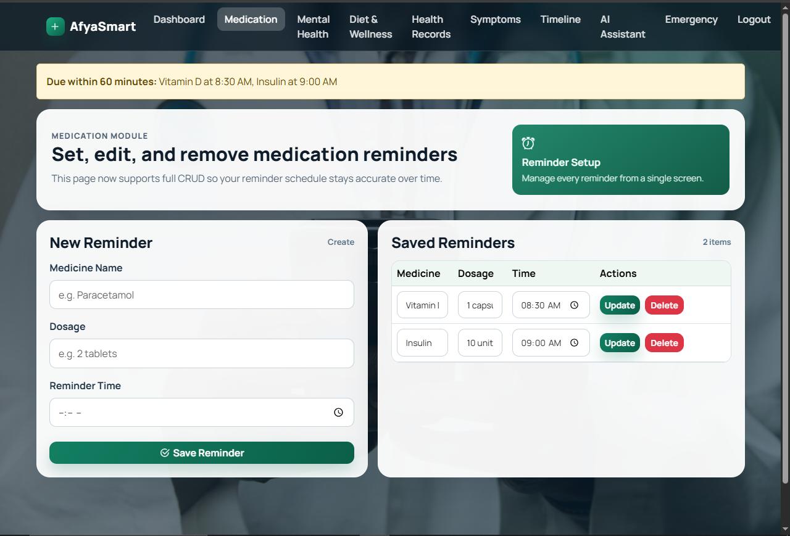
Medication Management
Mental Wellness & Insights
The mental wellness module allows users to record mood
check-ins and receive supportive responses. Mood data
is stored and presented through trend and mix charts
to help users understand their activity over time.
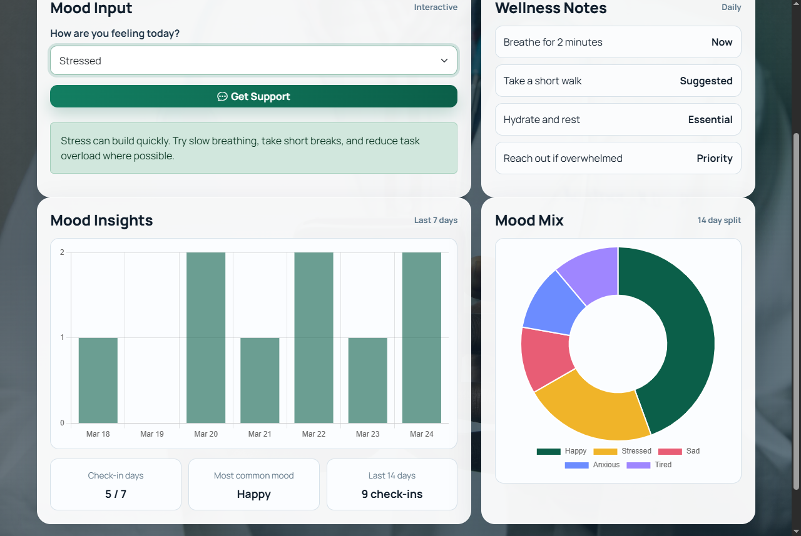
Mental Wellness & Insights
Symptoms Checker
The symptoms module allows users to record selected
symptoms, severity levels, and temperature information.
The system provides general guidance and red-flag
warnings while storing the checks for use in the health
timeline and daily health score.
Diet & Wellness Planner
The Diet & Wellness module provides personalized
wellness guidance based on the user's selections.
It forms part of AfyaSmart's broader approach to
supporting healthy daily routines and wellness planning.
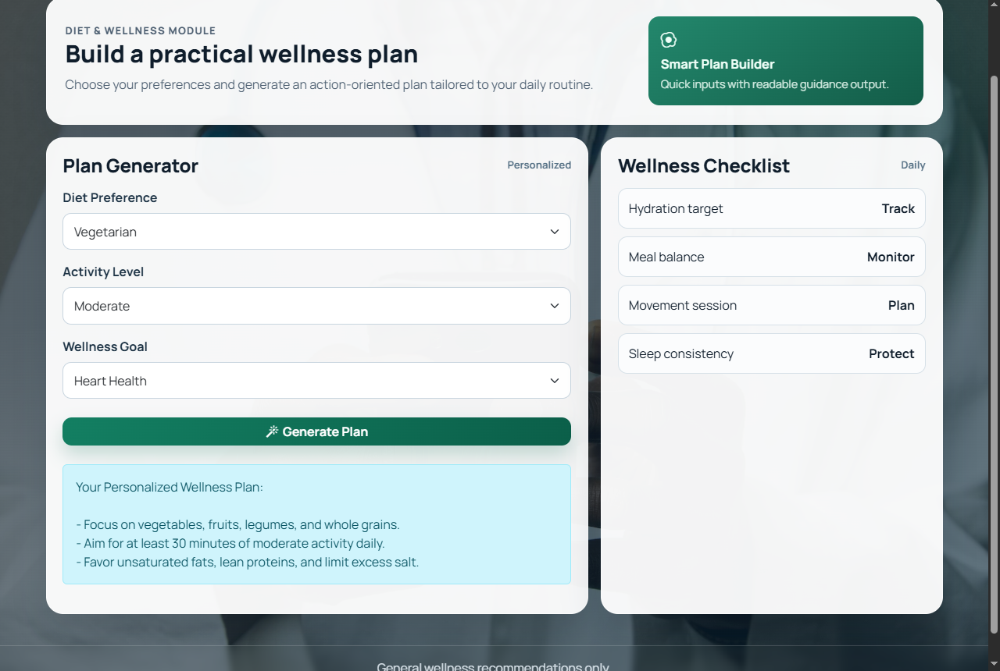
Diet & Wellness Planner
Health Timeline
A unified health timeline brings together information
from different modules, including health records,
medications, mood check-ins, and symptoms.
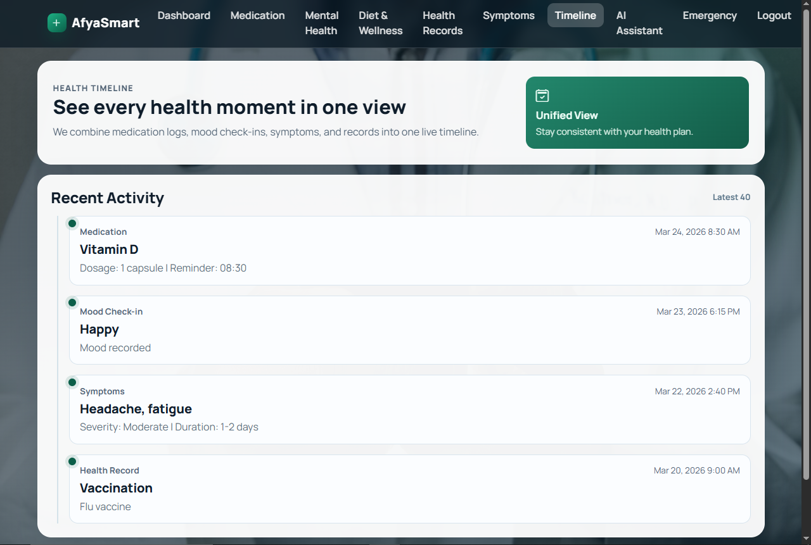
Unified Health Timeline
Data Visualization
Chart.js was used to present health insights visually,
including mood trends and the seven-day health score
trend.
Chart.js
Mood Trends
Health Score
7-Day Trend
Emergency Support
The emergency module provides an SOS action, browser
geolocation support, an embedded map, nearby healthcare
facility lookup, and external directions links.
Leaflet and OpenStreetMap are used for the map
functionality.
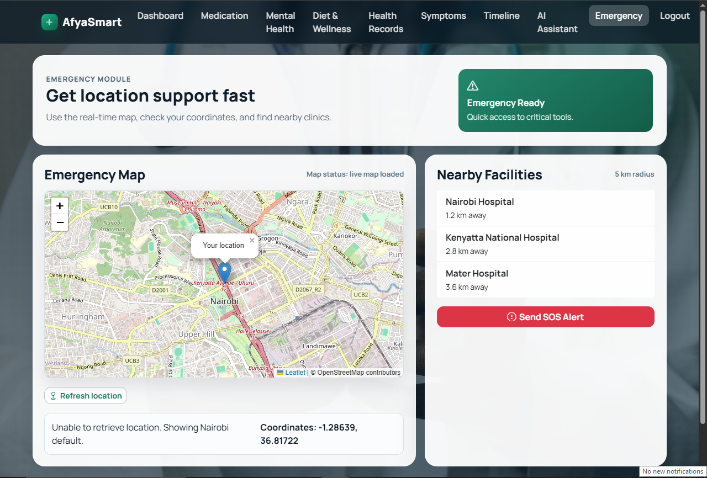
Emergency Support & Map Integration
AI Health Assistant
AfyaSmart includes a guided AI health assistant that
provides general routines and suggested next steps.
The assistant includes safety messaging and is designed
as a non-diagnostic support feature.
Backend & Database
PHP was used for backend processing while MySQL or
MariaDB provides the application's database layer.
Backend handlers and database connectivity are
organized within the backend directory.
Frontend
HTML + Bootstrap 5
Custom CSS + JavaScript
Backend
PHP
Database
MySQL / MariaDB
Additional Libraries
Chart.js
Leaflet + OpenStreetMap
Project Structure
dashboard.php
login.html
register.html
medication.php
mental-health.php
diet.php
health-records.php
symptoms.php
timeline.php
assistant.php
emergency.html
backend/
js/
css/
afya_smart.sql
Future Improvements
Planned improvements include role-based access,
email and SMS reminder delivery, deeper analytics,
exportable reports, optional external AI integration
with safety controls, and API-based emergency service
integration.
Skills Demonstrated
PHP Development
MySQL
HTML
CSS
JavaScript
Bootstrap
CRUD Development
Authentication
Database Integration
Chart.js
Map Integration
Project Outcome
AfyaSmart demonstrates practical full-stack web
development experience through the integration of a
PHP backend, relational database, responsive interface,
authentication, CRUD functionality, data visualization,
and location-based emergency support.
Project Objective
The goal was to develop a centralized platform where
users can submit IT problems and monitor their progress,
technicians can manage assigned tickets, and administrators
can oversee users and support activity.
The project demonstrates practical application
development, database integration, authentication,
role-based workflows, and IT support process management.
Tools & Technologies
PHP
MySQL
HTML5
CSS3
JavaScript
Apache
XAMPP
Git
GitHub
1. Dashboard & Ticket Overview
The dashboard provides an entry point to the ticketing
workflow. It helps users navigate the application and access
their support activities without manually tracking requests.
 Dashboard Overview
Dashboard Overview
- Centralized access to support features
- Ticket listing and issue-title visibility
- Ticket reference numbers for identification
- Easier navigation of support requests
2. User Registration & Authentication
SmartDesk includes user registration and login functionality.
Authentication provides a controlled entry point to the
system and supports separating user activities from
technician and administrator workflows.
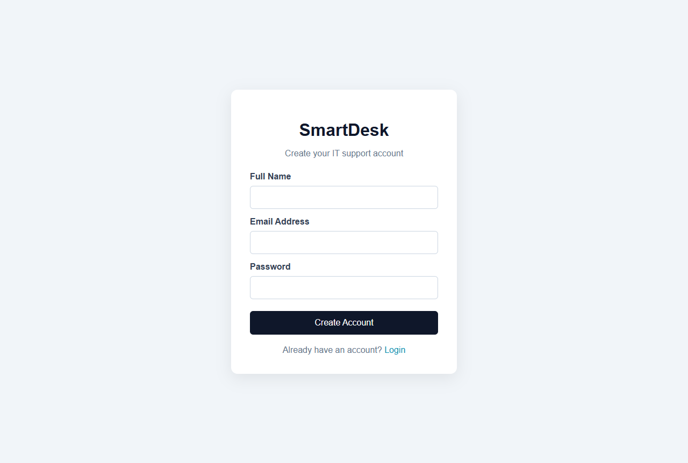
User Registration
The authentication workflow connects the web interface
to the PHP application and MySQL user records.
3. Ticket Creation & Issue Tracking
Users can submit IT support requests through the ticketing
workflow and view their submitted tickets. This creates
a structured way to report technical problems instead of
relying entirely on informal messages or verbal requests.
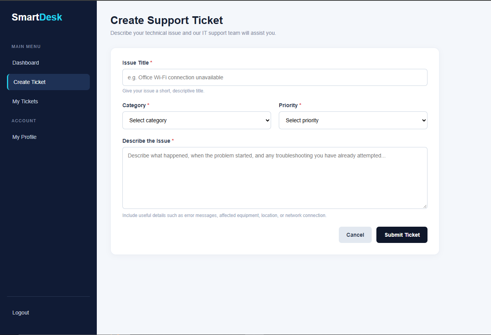
Submit a Support Ticket
 Ticket Details
Ticket Details
- Structured reporting of IT issues
- Ticket numbers and issue titles
- Access to ticket details
- A central location for submitted requests
4. Technician Dashboard & Assigned Tickets
The technician area supports the technical support workflow
by providing access to assigned tickets and their details.
This allows support staff to review reported problems and
manage their assigned work from a central interface.
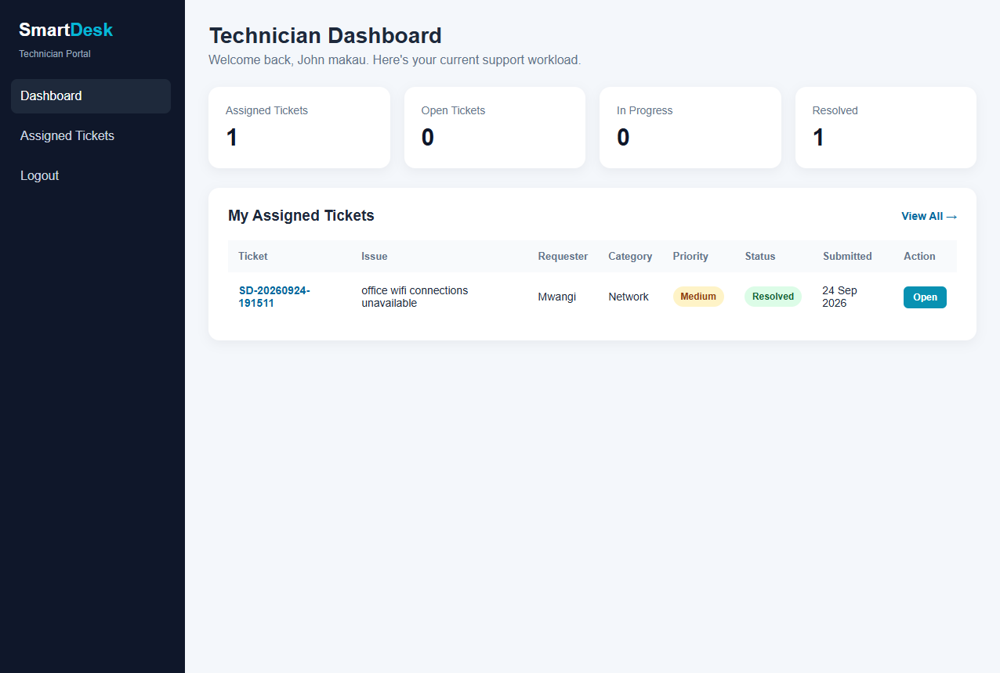
Technician Dashboard
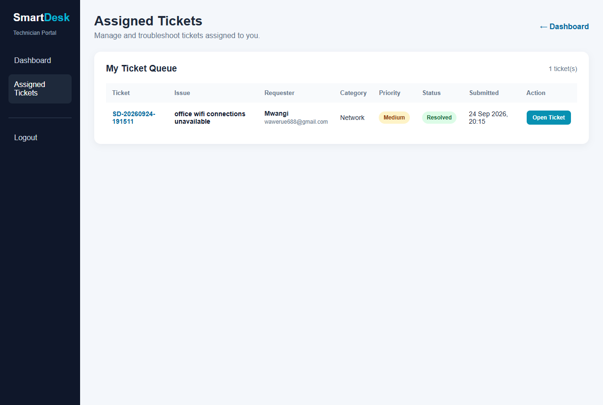
Assigned Tickets
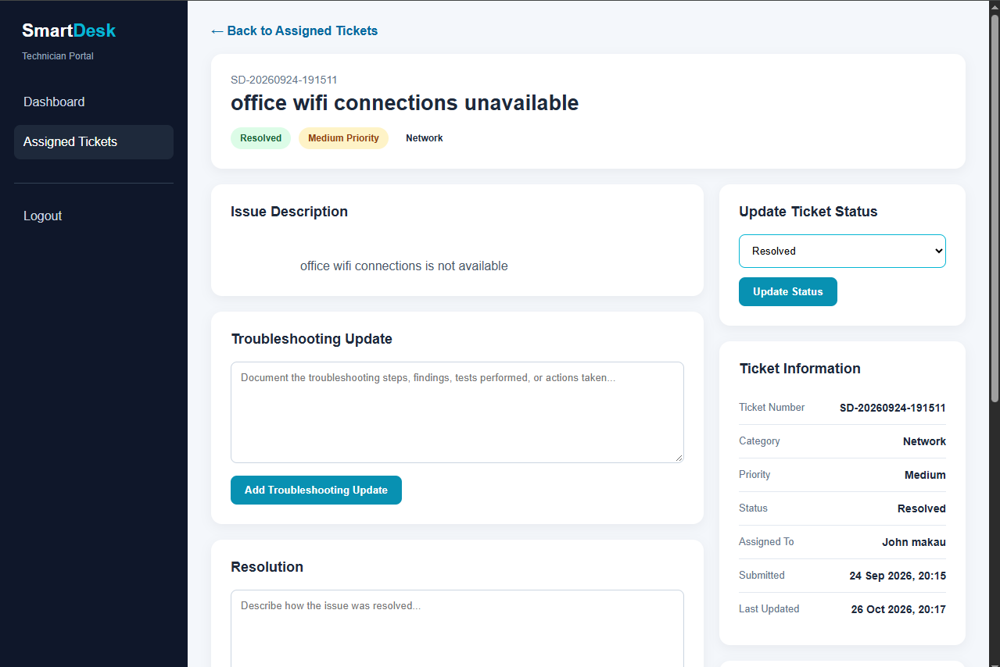
Ticket Investigation View
The technician workflow demonstrates how ticket assignment
and ticket details can be incorporated into a practical
service desk application.
5. Administration & User Management
The administration area provides management functionality
for overseeing the application. It includes an administrator
dashboard, user management, and access to ticket reports.
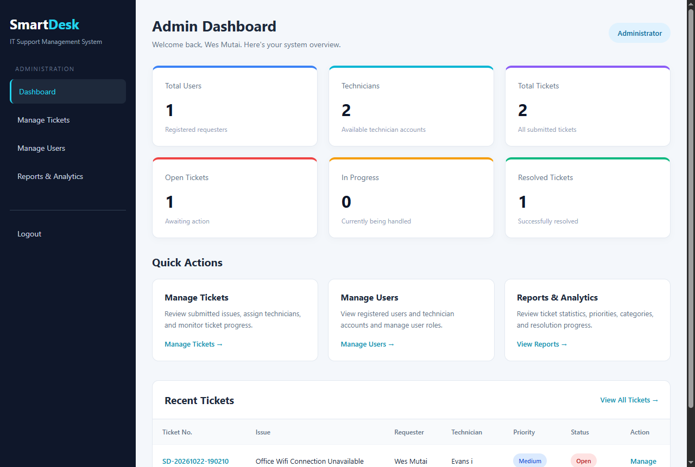
Admin Dashboard
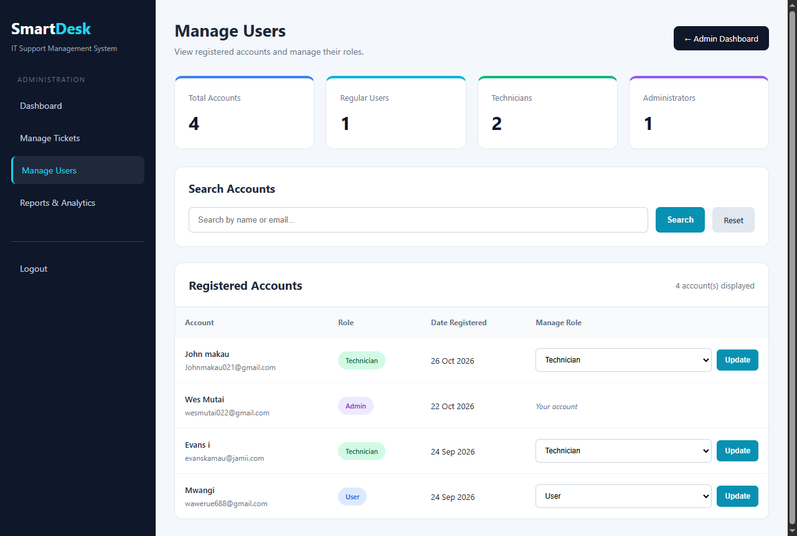
User Management
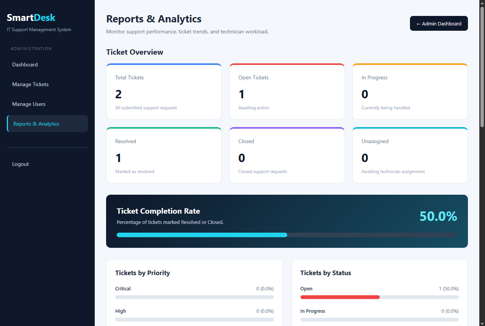
Reports & Oversight
- Administrator dashboard
- User management interface
- Ticket reporting page
- Separate user, technician, and admin workflows
6. Database Design & Application Structure
SmartDesk uses MySQL to persist application data and PHP
to process application requests. Its database includes
user and ticket records, together with ticket assignment
and ticket update records used by the support workflow.
Users
Tickets
Ticket Assignments
Ticket Updates
PHP Backend
MySQL Database
The application was developed and tested locally using
XAMPP, with Apache serving the PHP application and MySQL
handling the database.
7. Testing & Troubleshooting
Development involved resolving issues across application
routing, database operations, ticket details, and
role-specific pages. This required checking both the
PHP logic and the connections between application pages.
- Registration and login workflow checks
- Ticket creation and listing checks
- Technician assigned-ticket page troubleshooting
- Administrator dashboard and user-page fixes
- Reports page and database-related troubleshooting
Skills Demonstrated
IT Service Management
PHP Development
MySQL
Database Integration
Authentication
Role-Based Workflows
Application Debugging
Web Testing
Git & GitHub
Project Outcome
SmartDesk demonstrates the development of a multi-role
IT support ticketing application with user authentication,
ticket submission and tracking, technician assignment,
administrator functions, and reporting pages. It combines
practical IT support processes with PHP and MySQL web
application development.
The project is relevant to service desk operations,
technical support workflows, application troubleshooting,
and entry-level web development.
View SmartDesk on GitHub
Project Objective
The objective was to build a centralized toolkit that
makes common IT support checks easier to access and
presents diagnostic information through a browser-based
interface.
The project connects Python-based system utilities
to a Flask web application, making it possible to run
selected diagnostics and view their results from a
dashboard.
Tools & Technologies
Python
Flask
psutil
HTML5
CSS3
Jinja Templates
Windows
Git
GitHub
1. IT Support Dashboard
The dashboard acts as the central navigation point for
AutoTech. It provides access to the toolkit's diagnostic
modules and report-related pages, bringing common support
tasks together in one interface.
 Main Dashboard
Main Dashboard
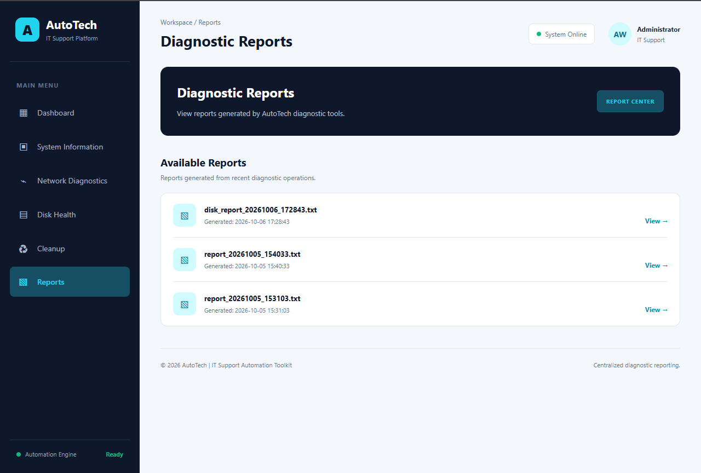
Reports Dashboard
- Centralized navigation for diagnostic modules
- Access to system and network checks
- Access to disk information
- Generated report listing and viewing
2. System Information
The System Information module collects useful details
about the computer and displays them through the
application. This helps an IT support technician review
the machine's basic configuration during initial diagnosis.
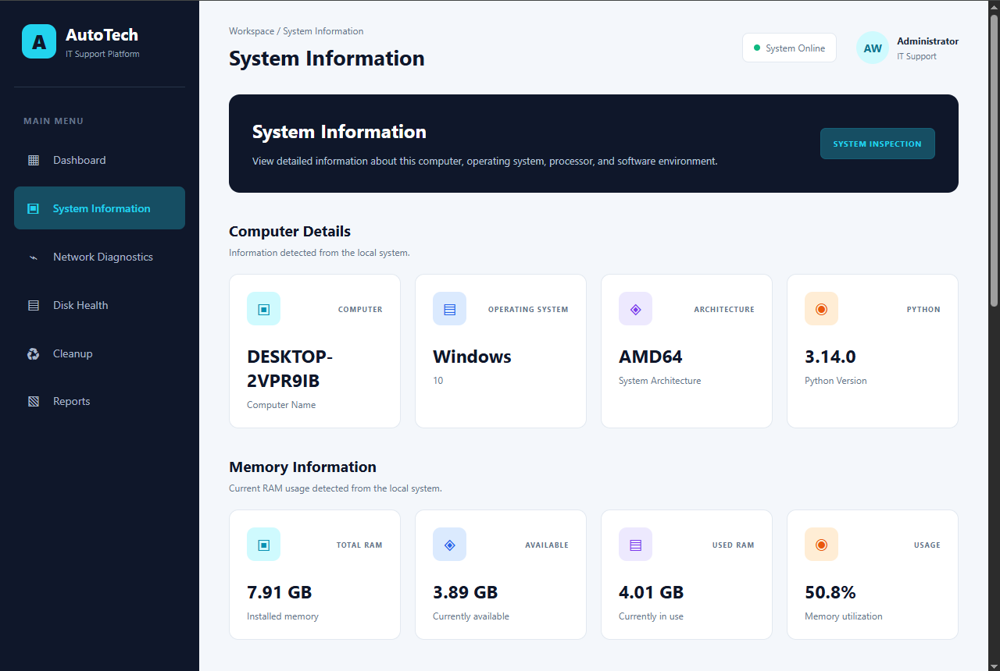
System Information
The module includes information such as:
- Hostname and operating system
- Processor information when available
- Python runtime information
- Memory capacity and usage information
- Storage capacity and available space
3. Network Diagnostics
The Network Diagnostics module supports basic network
troubleshooting by running diagnostic checks and
displaying the resulting information through the Flask
application.
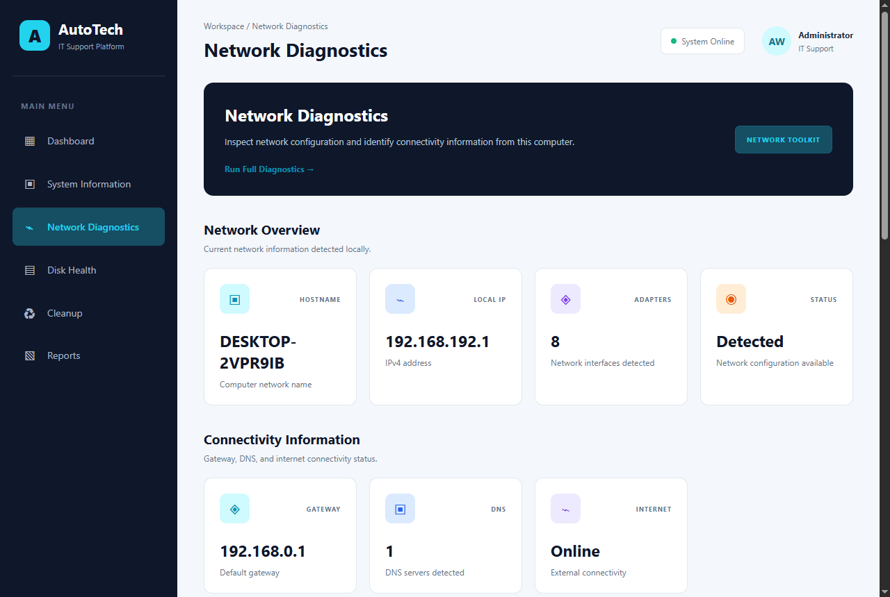
Network Diagnostics Interface
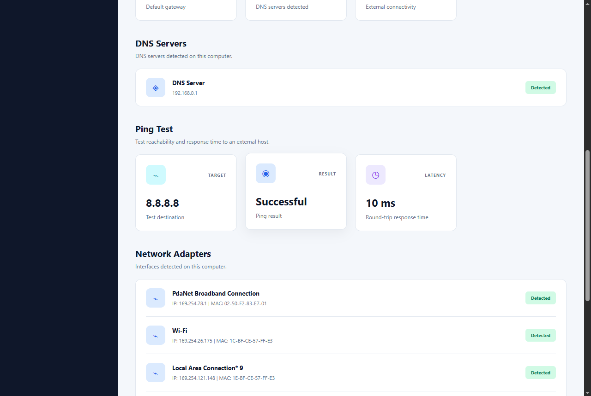
Diagnostic Results
- Network diagnostic action through the dashboard
- Results returned to the application interface
- Support for investigating basic connectivity issues
- A central place to review diagnostic output
These tools support initial troubleshooting; they do not
automatically identify or resolve every possible network
fault.
4. Disk Health & Storage Monitoring
The Disk Health & Storage module displays storage
information such as disk capacity, used space, available
space, and usage percentage. Capacity warnings can help
identify drives that may require attention.
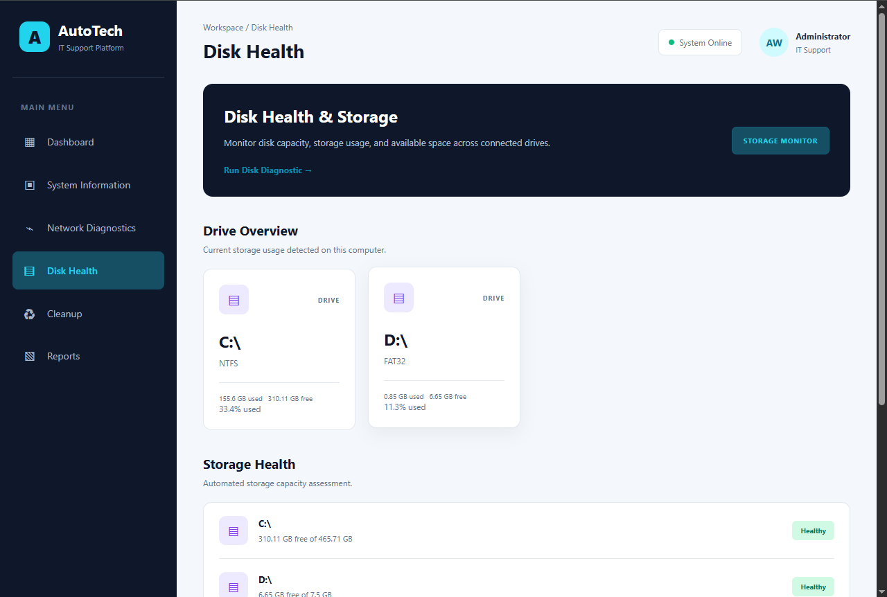
Disk Health & Storage
 Storage Usage Details
Storage Usage Details
- Disk capacity information
- Used and available storage space
- Storage usage percentage
- Capacity warnings for drives requiring attention
The current module focuses on storage usage and capacity
monitoring. These indicators should not be interpreted as
a complete physical disk health or failure prediction test.
5. Troubleshooting Report Generation
AutoTech includes a troubleshooting report feature that
generates a text report and stores it in the application's
reports directory. This provides a persistent record of
diagnostic information that can be reviewed later.
 Generate Troubleshooting Report
Generate Troubleshooting Report
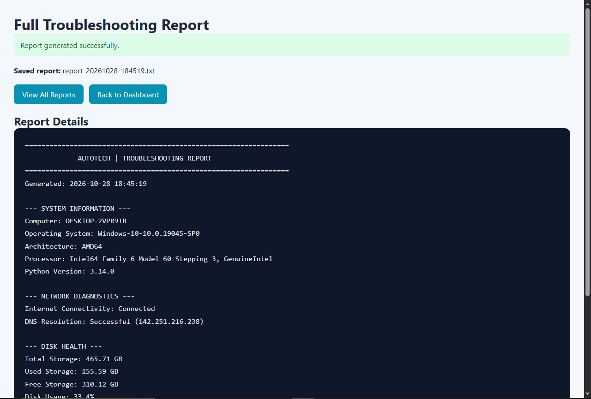
Report Output
- Report generation from the application
- Timestamp-based report filenames
- Text report files saved in the reports directory
- Easier retention of troubleshooting information
reports/
report_YYYYMMDD_HHMMSS.txt
The timestamp-based naming approach helps distinguish
individual report files and reduces the likelihood of
accidentally reusing the same filename.
6. Reports Dashboard & Saved Reports
The Reports Dashboard lists reports generated by the
application and provides access to previously saved
report contents. This creates a simple workflow for
revisiting diagnostic information without having to
generate the same report again.
Saved Reports
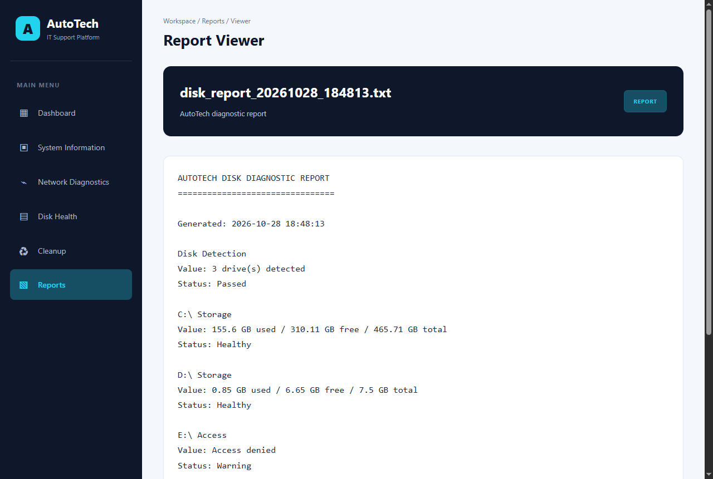
View Saved Report
- Listing of previously generated reports
- Timestamp-based report identification
- Opening saved report contents
- Persistent report files stored locally
7. Application Structure & Integration
AutoTech uses Flask to connect browser requests to
Python-based diagnostic functions. HTML templates
display the information returned by the backend,
while CSS provides the dashboard's presentation.
AutoTech/
├── app.py
├── reports/
├── templates/
│ ├── dashboard.html
│ └── ...
└── static/
└── css/
└── style.css
This simplified structure highlights the Flask entry
point, template layer, stylesheet, and report storage
directory. Add any other folders shown in your actual
project when documenting the final repository structure.
Flask Routes
Python Modules
HTML Templates
CSS Styling
System Utilities
Report Files
8. Testing & Troubleshooting
Development involved testing the individual diagnostic
pages and correcting issues in Flask routes, function
calls, template rendering, and report handling.
- System information page loading and output checks
- Network diagnostics route testing
- Disk usage display and capacity warning checks
- Troubleshooting report generation
- Reports dashboard listing and opening saved reports
Debugging included resolving route and indentation issues,
checking variable scope, and ensuring that the correct
template was available for each page.
Skills Demonstrated
Python Programming
Flask Development
System Information
Network Troubleshooting
Storage Monitoring
Report Generation
HTML & CSS
Debugging
Application Testing
Technical Documentation
Project Outcome
AutoTech brings several practical IT support functions
into one Flask-based dashboard. The working modules
demonstrate system information collection, network
diagnostics, storage usage monitoring, troubleshooting
report generation, and access to previously saved reports.
The project demonstrates the use of Python to support
everyday IT operations and the integration of backend
utilities with a browser-based interface.
View AutoTech on GitHub